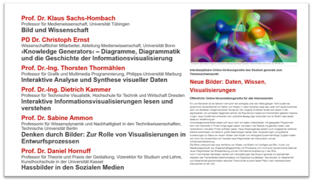
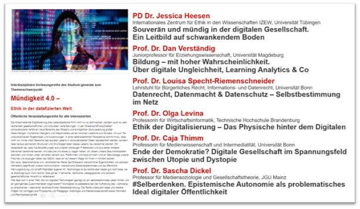

Daten-Ringvorlesungen im Studium Generale
Multiperspektivität und neue Öffentlichkeiten
Toolbeschreibung
Als klassische Veranstaltungsform ist die Ringvorlesung an Hochschulen gut etabliert (Eberhardt, 2010). Sie dient häufig der Einführung in Fächer und Studiengebiete oder der Präsentation eines Instituts oder einer anderen Einrichtung. Auch zur Etablierung neuer Forschungsfelder oder Verbünde wird sie eingesetzt, ebenso zu Jubiläen oder anderen Anlässen. Als Fakultätsvorlesung zeigt sie den präsumtiven Zusammenhalt mehrerer Fächer. In allen Fällen ist die Pluralität von Perspektiven auf einen gemeinsamen Gegenstand und die Gewinnung oder Bekräftigung einer öffentlichen Präsenz von Themen, Einrichtungen oder Schwerpunktsetzungen das Ziel solcher Reihen.
Im Bereich von Datenkompetenzen und Datenpraktiken sind alle genannten Ziele gleichermaßen relevant. Niedrigschwellige Zugänge, interessante Schwerpunkte, interdisziplinäre Schnittstellen, Vernetzung, Aufbau eines neuen Feldes und Gewinnung öffentlicher Präsenz sind Aufgaben und wichtige Aspekte einer Etablierung von Data Literacy, gleich ob fachspezifisch oder inter- und transdisziplinär. Ringvorlesungen können vor allem dort, wo es noch wenig an dedizierten Data-Literacy-Angeboten gibt, separate Themen bündeln, Kooperationen initiieren und einen übergreifenden Diskurs ermöglichen. Wie sich am Beispiel der JGU darstellen lässt, erfüllt das auch ohne Ausrichtung auf vordefinierte Basiskompetenzen eine wichtige Funktion in der Thematisierung von Datenpraktiken.
Lehrangebote zu Data Literacy werden an der JGU von der zentralen wissenschaftlichen Einrichtung Studium generale im Rahmen von hochschulinternen Projekten und Landesprojekten angeboten und koordiniert. Das Studium generale ist eine der traditionsreichen Einrichtungen seiner Art. Universitäts- und stadtöffentliche Ringvorlesungen und Vortragsreihen mit externen Vortragenden sind seit 1953/1954 etabliert und behandeln jeweils wechselnde Schwerpunkte. Die Reihen sind für Studierende als individuelle Zusatzqualifikation belegbar und seit 2009 auch ein Baustein in interdisziplinären Exportmodulen, die in derzeit 30 Bachelor- und Masterstudiengängen als Pflicht- oder Wahlpflichtmodul verankert sind. Seit dem Wintersemester 2019/2020 wurden und werden in mehreren dieser eigentlich für Öffentlichkeit und Exportlehre gedachten Reihen auch datenrelevante Themen behandelt. Diese decken und deckten sowohl technisch-methodische als auch gesellschaftliche Aspekte ab. Im Einzelnen standen die Vorträge unter den Oberthemen „Die datafizierte Gesellschaft“, „Digital Humanities“, „Daten, Wissen, Visualisierungen“ sowie „Mündigkeit 4.0“. Vorrangig externe Eingeladene, teils auch JGU-interne Personen mit entsprechender Expertise sprachen aus jeweiliger fachlicher Sicht oder Erfahrung über Aspekte des Oberthemas.
Schon im ersten der genannten Semester, also noch vor Beginn der Coronapandemie, wurden die meisten Vorträge aufgezeichnet; während der Pandemie fanden die Reihen in der Regel als Onlinereihen mit Livestreaming und Fragemöglichkeiten statt (zum Setting Hütig et al. (2021)). Die Aufzeichnungen stehen den Studierenden und in der Regel auch der Öffentlichkeit weiter zur Verfügung. Die meisten werden derzeit in einem Förderprojekt für die OER -Plattform des Landes (siehe Kapitel 6) bearbeitet.
Voraussetzungen & Zielgruppen
Die Ringvorlesungen werden fachübergreifend als freie Zusatzqualifikation und zugleich als Modulbaustein des Exportmoduls in den derzeit 30 kooperierenden Studiengängen aller Fächergruppen angeboten. Darüber hinaus sind sie Teil der Bürger:innenuniversität und damit auch für Gast- und Seniorstudierende geöffnet. Konzeption, Planung und Organisation wie Durchführung werden seitens des fest angestellten Personals des Studium generale geleistet, zumeist in einer Kooperation von zwei bis drei Mitarbeitenden dieser Einrichtung. Die Planung beginnt dabei etwa ein knappes Jahr vor dem betreffenden Semester mit der ersten Konzeption; Feinplanung und Einladungen erfolgen dann im Semester vor der geplanten Durchführung.
Die Vortragenden sind darüber informiert, dass keine fachlichen Hintergründe vorausgesetzt werden können, ein akademisches Niveau jedoch erwartet wird. Durch die relative Eigenständigkeit der Einzelvorträge ist der Aufwand für gemeinsame Festlegungen und die übergreifende konzeptionelle Arbeit relativ gering; in den Exportmodulen wird dies für die teilnehmenden Studierenden in eigenen begleitenden Lehrveranstaltungen geleistet. Die Moderation der Vorträge sowie der anschließenden Diskussionen übernehmen die Mitarbeitenden des Studium generale, die so auch für eine didaktische Reduktion oder die Vernetzung mit den anderen Inhalten der Reihe oder aktuellen Fragen sorgen.
Durch die Anbindung an eine bestehende Einrichtung mit vielfältigen Erfahrungen in vergleichbaren Bereichen sind die wichtigen institutionellen, finanziellen und organisatorischen Voraussetzungen abgesichert. Für vergleichbare Projekte an anderen Standorten ist die Sicherstellung einer Ausstattung eine nicht zu unterschätzende Bedingung.
Kompetenzen
Anders als in dediziert auf den Erwerb von Data Literacy ausgerichteten Angeboten mit entsprechenden Kompetenzrahmen – diese werden an der JGU derzeit durch Selbstlern-, semesterbegleitende und Kompaktkurse im Rahmen eines Landesprojekts abgedeckt – sind die Ziele der Daten-Reihen auch im Bereich inter- und transdiziplinärer Kompetenzen (Lerch, 2017) angesiedelt. Dazu gehört eine Haltung der Offenheit und der Reflexion der eigenen wissenschaftlichen Sozialisation sowie der Kommunikationsbereitschaft anderen Disziplinen gegenüber und über Wissenschaft hinaus. Orientierungswissen, Integration in übergeordnete Zusammenhänge und die Befähigung, sich mit Grundfragen und zentralen Problemfeldern datengetriebener Wissenschaft und Gesellschaft auseinanderzusetzen, sowie die Sensibilisierung für eigenverantwortliches Handeln kommen hinzu.
Lerninhalte & Methoden
Die Reihen umfassen stets sowohl geistes-/kulturwissenschaftliche, sozialwissenschaftliche und technikwissenschaftliche Zugänge, um so die interdisziplinäre Breite abzudecken und für die Präsenz datenrelevanter Fragestellungen auch in Fächern zu sensibilisieren, in denen das nicht bereits naheliegt. Umgekehrt werden Studierende der MINT-Fächer an juristische, politische, ethische und kulturwissenschaftliche Fragestellungen herangeführt und so für die Kontexte und Konsequenzen von Datenpraktiken sensibilisiert. Exemplarisch zeigt sich der Aufbau einer solchen Reihe an den beiden Übersichten (Abbildung 1 und Abbildung 2).


Je nach didaktischer Aufbereitung seitens der Vortragenden kommen – insbesondere in den Onlinevorträgen – erweiterte aktivierende Methoden auf digitaler Basis zum Einsatz, etwa Umfragen während des Vortrags, Q&A-Seiten oder kollaborative Whiteboards. Für Fragerunden nach den Vorträgen werden zusätzlich E-Mail-Adressen genutzt und die Fragen vorgelesen beziehungsweise paraphrasiert und live beantwortet. In den allerdings nur für Studierende bestimmter Studiengänge angebotenen Begleitübungen werden auch andere didaktische und methodische Zugänge gewählt und praktiziert. Hier findet dann für die Studierenden der Kooperationsstudiengänge auch eine Prüfungsleistung statt, die – dem interdisziplinären Zuschnitt entsprechend - in einer schriftlichen Ausarbeitung (Essay), einer eigenen Datenanalyse oder -visualisierung oder einer kleinen Medienproduktion bestehen kann. Dafür haben Studierende etwa Interviews mit Datenanalyst:innen geführt oder Positionen landespolitisch aktiver Personen zum Datenschutz in einem Podcast verarbeitet. Für die Ringvorlesungen selbst ist eine Prüfungsleistung nicht vorgesehen.
Erkenntnisse & Erfahrungen
Neben der Aufgabe, für die verschiedenen Zielgruppen gleichermaßen interessante und relevante Themensetzungen zu finden, und der Organisation einer Reihe mit allen technischen, personellen, kommunikativen und finanziellen Bedingungen stellt vor allem die inhaltliche Profilierung eine Herausforderung dar. Anders als bei enger aufeinander abgestimmten Ringvorlesungen sind die Inhalte der Einzelvorträge zunächst nur grob umrissen und in der Verantwortung der jeweiligen Vortragenden. Dies kann jedoch auch ein Vorteil im Sinne der angestrebten inter- und transdisziplinären Kompetenzen sein, zu denen ja auch die Auseinandersetzung mit fachfremden Inhalten, Zugängen und Darstellungsweisen gehört.
Für die Reduzierung des Aufwands und die Bereitschaft der Eingeladenen, an den Reihen mitzuwirken, hat sich die digitale Durchführung als vorteilhaft erwiesen. Dies setzt allerdings zur Vermeidung von Störungen ein erprobtes und definiertes Setting sowie eine hinreichende Vorbereitung plus Testsitzungen mit den externen Vortragenden voraus. Zugleich hat das digitale Setting mit Blick auf die studentische Teilnahme sowohl positive als auch negative Effekte. Während viele nicht nur in der Pandemie den unkomplizierten und individualisierten Zugang und die Verfügbarkeit von Aufzeichnungen schätzen, gehen die Unmittelbarkeit einer gemeinsamen Präsenz und die Möglichkeiten diskursiver Interaktion etwas verloren (Dinkelaker, 2021). Dies gilt auch für die anschauliche Erfahrung disziplinärer und persönlicher Besonderheiten der Vortragenden und unterschiedlicher Wissenschaftsstile.
An den genannten vier Reihen nahmen über 500 Studierende aus allen Fächergruppen mit Anmeldung teil, zahlreiche weitere bei einzelnen Veranstaltungen oder auch ohne Anmeldung an der ganzen Reihe. Die Aufzeichnungen von drei der vier Reihen – die vorpandemische war zeitlich und personell zugangsbeschränkt – haben über 2.000 Aufrufe erfahren (Stand: Frühjahr 2023).
Für die Nachfrage seitens der Studierenden ist eine teilweise extrinsische Motivierung durch curriculare Verankerung natürlich wünschenswert. Wo diese nicht gegeben ist, müssen die inhaltliche Attraktivität des Angebots und die Kompetenz der Vortragenden als Argument dienen. Als Zusatzqualifikation wird die Teilnahme aber im Transcript of Records unter Anrechnung von zwei Leistungspunkten vermerkt; auch eine Micro-Zertifizierung ist prinzipiell denkbar. Für ein derzeit an der JGU in der Planung befindliches Masterstudienmodell mit der Möglichkeit, Zertifikate abzulegen beziehungsweise curricular einzubringen, wird ein solches mit einer Ausrichtung auf (unter anderem) Data Literacy entwickelt. Nach dem in den genannten Exportmodulen praktizierten Modell begleitender Lehrveranstaltungen lassen sich sowohl interdisziplinäre als auch fachspezifische Weiterführungen konzipieren, um neben einer dedizierten Data Literacy Education auch weitergehende Reflexionen mithilfe interdisziplinärer Perspektiven zu verankern und das Thema in der Hochschulöffentlichkeit präsent zu halten.
Hilfreiche Links
- Informationen zur Einrichtung und zu den Vortragsreihen sowie Links zu den Aufzeichnungen (im Archiv): https://www.studgen.uni-mainz.de/.
- Informationen zu den Data-Literacy-Lehrangeboten: https://www.studgen.uni-mainz.de/data/.
- OER-Plattform des Landes Rheinland-Pfalz: https://openedu-rlp.de/.
Autorenprofil
Dr. Andreas Hütig studierte Philosophie, Politikwissenschaften, Literaturwissenschaften und Jura an der JGU Mainz und promovierte dort mit einer kulturphilosophischen Arbeit. Neben seiner Arbeit für die Bürger:innenuniversität des Studium generale der JGU Mainz und der interdisziplinären Lehre in den Exportmodulen koordiniert er die überfachlichen Lehrangebote im Bereich Data Literacy an der JGU. Sein besonderes Interesse gilt dabei datenethischen Fragen und der Reflexion von Datafizierung und Digitalisierung in Bildung und Gesellschaft.